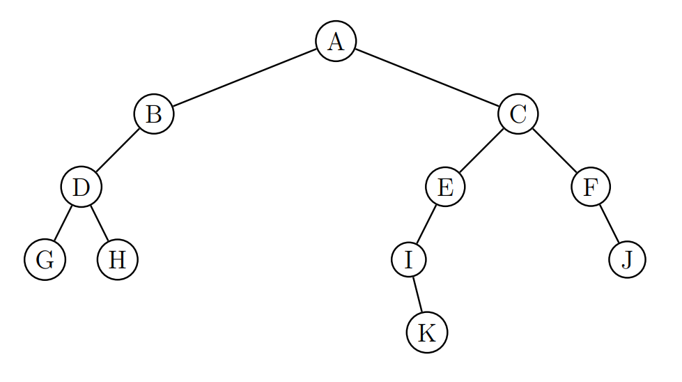

Parcourir un arbre binaire#
Un arbre binaire peut être parcouru afin de connaître les noeuds qu’il contient. Il est possible de parcourir cet arbre verticalement, appelé parcours en profondeur ou horizontalement, appelé parcours en largeur.
Il y a trois façons distinctes de parcourir un arbre en profondeur. Ces trois parcours sont récursifs.
parcours infixe
On se déplace récursivement dans l’arbre gauche;
On note la valeur du noeud qu’on appelle clé;
On se déplace récursivement dans l’arbre droit.
parcours préfixe
On note la valeur du noeud qu’on appelle clé;
On se déplace récursivement dans l’arbre gauche;
On se déplace récursivement dans l’arbre droit.
parcours suffixe:
On se déplace récursivement dans l’arbre gauche;
On se déplace récursivement dans l’arbre droit;
On note la valeur du noeud qu’on appelle clé.
parcours en largeur:
Le parcours en largeur consiste à relever les noeuds par niveau dans l’ordre croissant de profondeur, c’est à dire de la racine jusqu’aux feuilles.
Donner les 4 parcours de l’arbre binaire ci-dessous.
Un arbre binaire de taille 6 a pour parcours infixe : 1-2-3-4-5-6.
Donner une représentation de cet arbre.
Donner une représentation de cet arbre si la racine a pour valeur 6.
Donner une représentation de cet arbre sachant qu’il est bien tassé (à gauche).
{kind=link}
Parcours en profondeur#
Les algorithmes des parcours en profondeur sont proches et s’appuient sur l’algorithme récursif suivant.
Par exemple, pour le parcours infixe de l’arbre binaire:
fonction : parcours-infixe(arbre)
si l'arbre n'est pas vide:
on appelle récursivement la fonction avec le sous-arbre gauche
on affiche la clé
on appelle récursivement la fonction avec le sous-arbre droit
Écrire, en python, la fonction parcours_infixe qui prend en paramètre un arbre binaire et affiche le parcours infixe de l’arbre binaire.
Modifier votre fonction en ajoutant le paramètre parcours de type string pour que la fonction renvoie la chaine parcours contenant le parcours infixe.
Créer les fonctions parcours_prefixe et parcours_sufffixe pour les deux autres parcours puis vérifier avec des arbres binaires.
Recopier la fonction parcours_infixe puis modifier cette copie pour qu’elle renvoie une liste contenant le parcours infixe.
Vérifier vos différentes fonctions avec les arbres binaires construits dans l’introduction de ce TP.
Parcours en largeur#
Le parcours d’un arbre binaire peut se faire horizontalement, par niveau de noeuds. On dit que c’est un parcours en largeur. Pour ce parcours, il est nécessaire d’utiliser une file qui va contenir les arbres non encore visités.
L’algorithme de ce parcours en largeur est le suivant:
def parcours_largeur(arbre):
on crée une chaine vide parcours qui contiendra le parcours en largeur
on crée une file vide F et on enfile arbre
Tant que la file non vide :
on défile la tête dans la variable a (a est un arbre binaire)
si arbre a non vide :
on ajoute la valeur du noeud dans la chaine parcours
si arbre gauche non vide, on enfile arbre gauche
si arbre droit non vide, on enfile arbre droit
on renvoie la chaine parcours
Écrire en python l’algorithme de parcours en largeur d’un arbre.
Contrôler les parcours en largeur avec vos différents arbres saisis.
Peut-on remplacer la file par une pile ? Si oui, le réaliser, sinon expliquer.